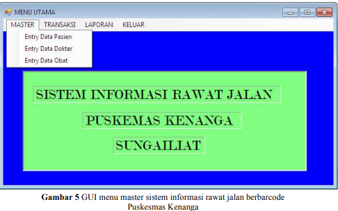
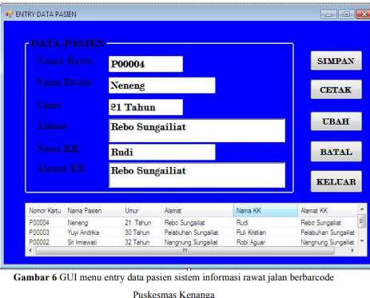
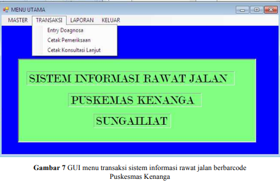
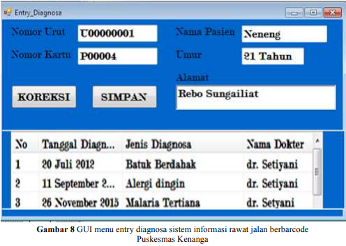

MODEL WATERFALL PADA SISTEM INFORMASI RAWAT JALAN DENGAN KARTU PASIEN BER-BARCODE STUDI KASUS : PUSKESMAS
Metode Penelitian
Metode penelitian yang digunakan adalah metode Waterfall, dimana metode ini merupakan model pengembangan yang terdiri dari tahapan : analisis, perancangan, pengkodean perangkat lunak, dan pengujian. Sehingga kebutuhan Puskesmas Kenanga dapat didefenisikan sesuai dengan kebutuhan pihak yang terlibat.
Dimana pada tahap analisis dilakukan dengan cara menganalisa dokumen yang digunakan di Puskesmas Kenanga dan apa kebutuhan yang diinginkan oleh pihak yang menggunakan sistem dapat diketahui dengan cara wawancara dan observasi. Tahap perancangan dilakukan dengan cara merancang basisdata kebutuhan data dalam sistem dan merancang Grapichal User Interface (GUI) yang merupakan penghubung antara user dan sistem informasi. Tahap pengkodean dilakukan dengan cara mendevelopment bahasa pemograman menggunakan visual basic.nett. Setelah pengkodean perangkat lunak dilanjutkan dengan pengujian sistem yang sudah dibuat apakah sudah sesuai antara kebutuhan dan keluaran yang dihasilkan oleh sistem informasi.
Hasil Dan Pembahasan


Graphical User Interface (GUI)
   Pengujian Proses Entry Data Pasien
| Kebutuhan | Proses Pengujian | Hasil Yang Diharapkan | Hasil Pengujian |
|---|---|---|---|
| Simpan pasien | Simpan pasien(jika data benar) | Data akan tersimpan ke database yaitu ke tabel pasien | Sesuai |
| Simpan pasien(jika data salah) | Tampil peringatan untuk memperbaiki data yang inputannya salah | Sesuai | |
| Ubah pasien | Simpan pasien(jika data benar) | Field yang diubah datanya akan berubah dan tersimpan di tabel pasien | Sesuai |
| Simpan pasien(jika data salah) | Field yang diubah datanya tidak akan berubah dan akan memunculkan konfirmasi kesalahan | Sesuai | |
| Hapus Simpan | Simpan pasien(jika data benar) | Data akan terhapus ke database yaitu ke tabel pasien | Sesuai |
| Simpan pasien(jika data salah) | Data akan terhapus dari database yaitu dari tabel pasien | Sesuai | |
| Cetak Pasien | Hubungkan ke printer | Data pasien akan tercetak di kartu pasien yang memiliki barcode | Sesuai |
| Koreksi diagnosa | Entry diagnosa sesuai kunjungan | Diagnosa pasien terentry di form diagnosa | Sesuai |
| Simpan diagnosa | Simpan data diagnosa pasien jika data benar | Data diagnosa akan tersimpan di tabel diagnosa | Sesuai |
| Simpan data diagnosa pasien jika data salah | Akan muncul pesan cek lagi diagnosa sudah sesuai apa belum | Sesuai |